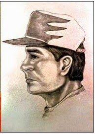

(Updated and revised.)
“His name used to be Don Jarrett,” long-time federal asset John Matthews told FBI Special Agent Adam Quirk during a July 9 phone call. Matthews was concerned that he would have to testify in a lawsuit filed by Salt Lake City attorney Jesse Trentadue seeking the release of long-concealed video tapes from the `1995 Oklahoma City bombing. Trentadue believes that the suppressed tapes would help identify “John Doe II,” a dark-haired, heavy-set man seen by dozens of people in the company of Timothy McVeigh on the day of the bombing.
“His name used to be Don Jarrett,” long-time federal asset John Matthews told FBI Special Agent Adam Quirk during a July 9 phone call. Matthews was concerned that he would have to testify in a lawsuit filed by Salt Lake City attorney Jesse Trentadue seeking the release of long-concealed video tapes from the `1995 Oklahoma City bombing. Trentadue believes that the suppressed tapes would help identify “John Doe II,” a dark-haired, heavy-set man seen by dozens of people in the company of Timothy McVeigh on the day of the bombing.
“John Doe II”
remains at large, and the FBI is perversely determined to protect him. For
reasons that will be explained anon, Trentadue is convinced that learning his
identity is necessary in order to obtain a measure of justice on behalf of his
late brother Kenneth, who was killed while in federal custody shortly after the
bombing.
| PATCON asset John Matthews. |

Matthews
was scheduled to testify during a federal court hearing in Salt Lake City last
July. On the basis of what he had told Trentadue, Matthews was expected to describe how the FBI was closely monitoring McVeigh
in the hours leading up to the bombing.
The FBI continues to insist – despite abundant evidence to the contrary -- that there was no advance warning of the OKC
terrorist attack, and that John Doe II and the "others unknown" referred to in Timothy McVeigh's indictment do not exist.
Trentadue maintains that there is a “strong possibility” that
the long-suppressed video recordings captured McVeigh in the company of a
second person who would be identifiable as “an FBI undercover operative."
During
the July 9th phone call with Matthews, Mr. Jarrett told the jittery federal informant to
avoid testifying if he could, and to perjure himself if he must. He was also
instructed to call Special Agent Quirk, who eagerly reinforced that advice.
“I ain't goin'
and I ain't saying nothing unless somebody issues me a subpoena,” Matthews told
Quirk, according
to a transcript obtained by Trentadue. Even if “they haul my ass to Salt
Lake City, I'm gonna set [sic] there on the stand and say I don't recall
anything.”
“That's fine,”
was Quirk's approving reply to Matthews' announced intent to commit perjury.
In a conversation
on the following day, Matthews reiterated his determination to avoid a
subpoena.
“Well, yeah, and
I mean – worst case scenario, even if you testified you can just – you can say
you have, you know – you have nothing to say,” advised Quirk.
Matthews, eager
to please a high-ranking officer of the American Cheka, suggested that he might
take a trip in order to avoid receiving a subpoena.
“That's fine,”
gloated Quirk. “F*ck 'em, right?”
| Back at ya: FBI Special Agent Quirk. |

It was during the
second conversation with Quirk that Matthews explicitly mentioned his role as an
undercover operative in an FBI initiative called called PATCON,
or “Patriot Conspiracy.” This was a long-term provocation campaign in which the
Bureau sought “to infiltrate and incite the militia and evangelical Christians
to violence so that the Department of Justice could crush them,” explains
Trentadue.
The man Matthews
had known as “Don Jarrett” had been his FBI handler – and apparently still is,
given the deference to him shown by Matthews. Now that the Regime has largely
shifted its domestic focus from Muslims back to “sovereign citizens,” Jarrett
is probably busy orchestrating homeland security theater operations involving
the “Radical Right.”
Assuming that "Don Jarrett" is still the name of Matthews' former handler, he may currently be working as an "Independent Insurance Professional" in Florida. According to his vita, Jarrett retired from the FBI in 1998, becoming an insurance investigator and security consultant for the NFL. It's not clear how he wound up in Afghanistan last year: A
May 1, 2013 email to Matthews reported that he was in Afghanistan, and that he
expected to leave at the end of June.
Using his last known email address, I sent Jarrett a number of questions to which he has not replied. Given PATCON's history the chances are pretty good that wherever Jarrett finds himself, bad things are being done to innocent people.
Using his last known email address, I sent Jarrett a number of questions to which he has not replied. Given PATCON's history the chances are pretty good that wherever Jarrett finds himself, bad things are being done to innocent people.
“Ruby Ridge was a
PATCON operation,” Trentadue has pointed out. “Waco was a PATCON operation. And
so, too, I believe, was the Oklahoma City Bombing.”
The same is
probably true of the little-remembered October 1995 sequel to the OKC Bombing –
the derailment of the Sunset
Limited, an Amtrak train carrying 248 passengers. Sleeping car attendant
Mitchell Bates was killed and 78 others were injured when four of the train's
12 cars careened off a 30-foot trestle.

A rail joint bar
supporting a critical section of the track had been removed by a saboteur who
also knew how to short-circuit sensors that would have alerted the Amtrak
engineer of trouble on the tracks ahead.
Typewritten
notes on both sides of the track expressed outrage over the familiar litany of
federal crimes and claimed responsibility on behalf of a group calling itself “Sons
of Gestapo” (SOG).
Publication of
the SOG manifesto caused
many foreheads to crease in puzzlement: This was a right-wing terrorist
group so obscure that its existence was unknown even to Morris Dees and his
ever-vigilant comrades, who are sensitive to every tremor of “right-wing
extremism” occurring anywhere in the soyuz.
SOG was unknown
prior to the derailment, and hasn't been heard from since. The FBI insists that
it is continuing to investigate the derailment. For the past seven years, Victor
Hooper, an electrical engineer from Anaheim, California, has been telling
anybody in the Bureau who will listen that he knows who carried out that
attack, and why it was done.
“That derailment
was carried out by some of the people who helped McVeigh build the bomb for
Oklahoma City,” Hooper insisted during a telephone interview with me. He claims
to have known at least two of them as neighbors in Anaheim, where they became
involved in drug trafficking as part of a neo-Nazi criminal syndicate –and that
John Doe II is actually a young man he has known since childhood.
As Hooper tells
the story, the man he identifies as John Doe II and whose identity is known to
the FBI, worked closely with Kingman, Arizona resident Michael Fortier, who was
involved in the OKC bombing plot and spent
ten years in prison after agreeing to testify against McVeigh. According to
Hooper, John Doe II told him that “McVeigh was trained in sabotage and taught
him how to derail a train.”
| He made a deal: Fortier. |

Following the bombing, and publication of a
composite sketch of “John Doe II,” FBI agents descended on Kingman en masse.
Hooper claims that “Doe” and a handful of co-conspirators (who originally
called themselves “Kings of Kings,” before adopting the moniker “Sons of Gestapo”)
staged the Amtrak attack as a diversion, working in cooperation with another,
longer-established neo-Nazi group.
“I heard these
guys talking about derailing a train, but at the time I didn’t take it
seriously,” Hooper told me. “For years I’ve been trying to get the FBI to act
on this, and I’ve been told that the investigation is still open, but they’re
not doing anything about this. They moved heaven and earth to get Osama bin
Laden, but their investigation into John Doe II has been lackluster, at best.
Why are they denying the testimony of twenty witnesses who saw McVeigh with
another John Doe, and saying that John Doe II didn’t exist?”
“The FBI says
that they’ve investigated the case, and they’ve planted agents around the
people involved in the train derailment,” Hooper continued. “But it’s been
nearly twenty years now, and they’ve not done anything about it.”
During his
conversation with me, Hooper made it clear that he doesn’t hold Jesse Trentadue
in particularly high esteem. However, they emphatically agree that the FBI
knows the identity of John Doe II, and continues to protect him.

In a motion
asking federal District Judge Clark Waddoups to hold the FBI in contempt of
court, Tretadue points out that in 1995, Jarrett was involved in the Kingman,
Arizona branch of the OKC Bombing investigation. At the time he was involved with the FBI's Joint Terrorism Task Force in Phoenix, which was obsessively focused on "right-wing extremism."
The FBI poured a huge amount of resources into the Amtrak derailment investigation, which it styled "Operation Splitrail." As is nearly always the case, the operation was either a huge failure as an investigation, or a hugely successful effort to avoid solving the crime.
Trentadue learned as much when he was “contacted by a man named Victor Hooper … who claimed to have information about both the Bombing and the Palo Verde train derailment that occurred in Arizona shortly after the Bombing. Hooper told [Trentadue] that the derailment was done to distract the FBI from the Arizona part of the Bombing investigation.”
The FBI poured a huge amount of resources into the Amtrak derailment investigation, which it styled "Operation Splitrail." As is nearly always the case, the operation was either a huge failure as an investigation, or a hugely successful effort to avoid solving the crime.
Trentadue learned as much when he was “contacted by a man named Victor Hooper … who claimed to have information about both the Bombing and the Palo Verde train derailment that occurred in Arizona shortly after the Bombing. Hooper told [Trentadue] that the derailment was done to distract the FBI from the Arizona part of the Bombing investigation.”
 |
| FBI's least wanted: John Doe II. |

During a
conversation with Matthews in 2013, Trentadue recounted what Hooper had told
him. That information was relayed by Matthews to his handler, and a short time
later Jarrett
contacted Trentadue to tell him that the derailment case “was still open;
that the derailment had in fact caused resources to be shifted away from the
Arizona portion of the Bombing investigation; and that Jarrett himself was
transferred from the Bombing investigation to the [derailment] case.”
Even more
importantly, Jarrett demanded that Trentadue “keep the Hooper information
confidential because Hooper knew things about how the derailment was carried
out that only the perpetrators would have known and that he, Jarrett, or others
within the FBI would follow up with Hooper.”
By “follow up,”
Trentadue understood, Jarrett probably meant “shut down.” This can mean witness
tampering, as in the case of John Matthews. It could mean protecting the
identity of key undercover operatives, such as “John Doe II.” In the case of
Kenneth Trentadue, it meant killing someone who had been misidentified as an
FBI asset with critical knowledge of the Bureau’s role in the OKC bombing plot.

For the better part of two
decades, Trentadue has tenaciously pursued the truth about the murder of his brother
Kenneth while in federal custody.
On parole after serving prison time for bank
robbery, Kenneth was detained in San Diego for a supposed parole violation and transported to the Federal Transfer
Facility in Oklahoma City shortly after the bombing. His body was “found” hanging in its cell on
August 21.
In body type,
facial features, age, and even criminal record, Kenneth was a near-twin of
Richard Lee Guthrie, a bank robber who was already in federal custody. Guthrie
had been involved in a gang called the Aryan Republican Army (ARA) that staged
bank robberies to fund domestic terrorism – including, apparently, the OKC
bombing. Along with McVeigh, members of the ARA were frequent guests at a white supremacist commune
in Oklahoma called Elohim City, which was overrun by government undercover
operatives: German national Andres Strassmeir, Klan activist Dennis Mahon,
Robert Millar, and former
OKC socialite-turned-ATF asset Carol Howe.
The Feds who
detained Kenneth Trentadue and beat him to death thought they were disposing of
Guthrie, who knew enough about the government’s role in the OKC bombing to betroublesome. Not long after Kenneth was murdered, Guthrie
fell victim to his own oddly staged “suicide.” This would have tied up some
critical loose ends – if Kenneth’s family hadn’t found a dangling thread, and
pulled on it has hard as they could.

By the time
Kenneth's mother Wilma was informed of his death, the crime scene was sanitized
and the body prepared for cremation. Through her shock and bereavement, Wilma
Trentadue had the clarity of mind to demand that her son's body be preserved
for a funeral.
As Wilma and
older brother Jesse were finally allowed to see Kenneth's mortal remains, they
were further afflicted by the company of Michael Hood, regional counsel for the
Bureau of Prisons.
As Jesse later recalled
the conversation, the suitably named Hood issued a singularly unsubtle warning:
"The Bureau of Prisons, the FBI and the U.S. Attorney's office -- we're
one big Justice Department.”
Jesse was astute
enough to understand the import of that remark, and brave enough to treat it
with the contempt it deserved. His resolution hardened into fury when he and
his mother peeled away several layers of crudely applied makeup and examined
the condition of Kenneth’s body.
"My brother had been so badly beaten that I personally saw several mourners leave the viewing to vomit in the parking lot!" Jesse wrote in an August 30, 1995 letter to the Bureau of Prisons that pulsated with tightly controlled rage. "Anyone seeing my brother's battered body with his bruised and lacerated forehead, throat cut, and blue-black knuckles would not have concluded that his death was either easy or a 'suicide'!”

Kenneth had
committed crimes in his life and made his full allotment of mistakes, but at
the time of his abduction he was the married, honestly employed father of a
young child.
Finding himself the hopeless captive of the most despicable human
beings defiling the earth, Kenneth defiantly chose to die on his own terms,
thereby leaving behind evidence that his death was an act of state-sponsored
murder, rather than despairing suicide.
"Had my
brother been less of a man, your guards would have been able to kill him
without inflicting so much injury to his body,” Jesse pointed out in his letter
to the BoP. “Had that occurred, Kenney's family would forever be guilt-ridden
over his death. Each of us would have lived with the pain of thinking that
Kenneth took his own life and that we had somehow failed him. By making the
fight he did for his life, Ken has saved us that pain, and God bless for having
done so!"
In 2001, a federal
judge ruled that the FBI had lied about the circumstances of Kenneth Trentadue’s
death, and had destroyed vital evidence in the case. The family received $1.1
million in damages, $250,000 of which was set aside as a reward for information
leading to the prosecution and conviction of Kenneth’s murderers. Jesse
Trentadue has continued to pursue civil action against the FBI, beginning with
his demand to see the suppressed video footage of the bombing. The Bureau,
displaying the resourcefulness of inveterate liars with unlimited funds, has
employed every dilatory and diversionary tactic it can conjure, including the
remarkable excuse that the recordings are lost somewhere in the trackless
depths of the agency’s evidence from the OKC bombing investigation.

Today (November
13) Trentadue was in court seeking to have the Bureau held in contempt, and asking
for the appointment of a “special master” to “oversee [the FBI’s] compliance
with the court’s orders, particularly relating to the allegations of witness
tampering, and with Plaintiff’s FOIA request.” While acknowledging the agency’s misbehavior, and “chiding”
them for it, Judge
Waddoups declined to sanction the Bureau. That limp rebuke prompted a
protest from the FBI’s attorney, Kathryn Wyer, who indignantly insisted that
the matter was closed because the Bureau had investigated itself and found no
wrongdoing.
In 2007, shortly
after filing his FOIA request for the OKC bombing videos, Jesse Trentadue
contacted by convicted co-conspirator Terry Nichols, who is serving a life
sentence for his role in the bombing and cannot be tried again on capital
charges. With Trentadue’s assistance, Nichols filed a deposition in a Salt Lake City federal court.
In that sworn
statement, Nichols claimed that McVeigh — who allegedly had been recruited as
an undercover intelligence asset while in the Army — had been working under the
supervision of Larry Potts, the same FBI official who wrote the murderous
“rules of engagement” at Ruby Ridge and later supervised the annihilation of
the Branch Davidians at Mt. Carmel, Texas. Coordinating the OKC operation was a
Deputy Attorney General named Eric Holder, who later played an important role
in covering up the circumstances of Kenneth Trentadue’s death.
Trentadue's legal crusade began as an act of filial loyalty. It has become a struggle to expose the truth about the FBI's ongoing campaign of surveillance, infiltration, provocation, and political murder.
"The reason [the FBI] doesn't want that tape released is ... that one of the people getting out of that truck on the morning of April 19, 1995, was working for the FBI," Trentadue said in an interview with Lew Rockwell. "The FBI had, I now know, at least five or six undercover operatives linked in with McVeigh in Elohim City. What I don't know is the motivation behind the bombing.... What is not clear is whether it was a sting operation gone bad, that the plan was to stop it but the FBI failed, or else they wanted it to happen, as horrible as that sounds.... It's clear that they facilitated the bombing, directly or indirectly. It's clear they didn't stop it."
As is so often the case, the best defense the Regime can make on its behalf is to plead murderous incompetence. In the best Soviet-style tradition of bureaucratic privilege, those most deeply implicated in the crime have been abundantly rewarded.
Today, Larry Potts enjoys
a well-compensated sinecure as a Vice President with
ambiguous duties for the Scientific Games Corporation. Eric Holder, who
reinstated the OKC-inspired domestic terrorism task force in January of this
year, is stepping down as Attorney General in anticipation of an even more
lucrative reward. John Doe II and his associates remain at large, as does Mr. Jarrett, and countless other members of the FBI’s merry troupe of
Homeland Security Theater players. We’ll be hearing from them again.
(My thanks to commenter "ATFsux," who pointed out some important information about Mr. Jarrett's background.)
(My thanks to commenter "ATFsux," who pointed out some important information about Mr. Jarrett's background.)
If you can, please donate to help keep Pro Libertate online. Thank you so much!
Dum spiro, pugno!
10 comments:
Don Jarrett currently is listed on LINKEDIN as an "Independent Insurance Professional" in West Palm Beach, FL., and having previously also been an investigator for MetLife, which seems to have been his start in the insurance biz. His photo is currently available on the net via an article about this case in the Salt Lake Tribune.
It was a horrible oversight on my part not to trawl through LinkedIn -- thanks for bringing this to my attention.
God watches the doings of the do-gooders in disgust! Avenge the innocent quickly, please oh Lord!
http://m.youtube.com/watch?v=b2fk3sk13pg
Outstanding overview of the events! I posted a link above that I show to people who have never heard of the okc stuff before and they are always shocked. It is Jesse Trentadue speaking and playing video clips for about an hour. The CNN report, the senator hatch statement to reporters before meeting with Holder, and the okc coroner statements to the media are all shocking even for people not too found of government to begin with.
http://sipseystreetirregulars.blogspot.com/2011/11/ssi-exclusive-hiding-mass-murder-behind.html?m=1
You might also enjoy this post written by one of the two citizen reporters who broke and kept alive the Fast and Furious story. It is about how Newsweek spiked a story on PATCON at the last minute after pressure from DC. Fascinating stuff.
Billy THE KID KILLER Clinton had a several THOUSAND page government terror bill ready the DAY AFTER OKC. It was passed UNREAD and was just another assault on the Constitution.
I have to tell you that the SOG smells like PURE .gov.
And the Mahon brothers talk about IDIOTS.
I've noted that .gov and the $PLC and the ADL sure think rightwing 2nd Amendment folks are BAD and they want us GONE.
Will Grigg, the man is a fire-breathing patriot like the founding fathers, hell more like the Swamp Fox Francis Marion.
2 questions and truthfully I don't know the answers. Did Janet Reno as the AG order the attack on the Waco church from that federal building in OKC? And last, wasn't that federal building in OKC a hub for the other federal building in that part of the country and held the government's hard copy paperwork on the details of the government's Whitewater land scam?
Every account I've read claims that Reno was in Washington when she presented the CS plan to Clinton, and then signed off on it. In the year or so following the holocaust at Mt. Carmel I was exposed to a lot of Whitewater-connected rumors involving Waco, but I've never seen any substantive evidence of a connection.
Forgive me -- I meant to say "Whitewater-connected rumors involving the OKC bombing." There were other Clinton-centered rumors involving the ATF agents who were killed at Mt. Carmel.
You do an outstanding job connecting the webs of lies and corruption. I think this is one of those articles that to me really effectively shows that the state has been radicalizing, and probably funding/arming/training unstable/vulnerable people to justify a police state. What you've described reminds one of the behavior of the government in regards to radical Islam, funding, arming, training and radicalizing them then using those wind-up toys as a justification to carry out their agenda.
Programs like that are not aimed at stopping radicals. Saying you're trying to stop such behavior that way is like a firefighter giving kids matches and showing them how to start a fire and calling it a "fire safety" program.
I mean they talk about arming "moderate rebels" to fight radical muslim extremists, but then they just radicalize muslims that also think rape is acceptable. Last I checked there's only one group that I consider to have ever been "moderate rebels" against radical islam. They're called Shaolin Buddhist monks and they've fought radical islam for centuries. These are the only people you could "wind-up" like that without a high likelihood they too will become violent radicals. If you're raping kids, they'll kill you to save you from incurring bad karma, and to save the kid, thus accumulating good karma. Instead of arming guys that believe in karma, they arm ones that are on a crusade.
Post a Comment